ESP-OPEN-SDK: работа с WiFi соединением в режиме клиента (station mode)
разделы: Интернет вещей , дата: 19 мая 2019г.
В данной статье я хочу рассмотреть наиболее простые примеры для работы с сетью средствами SDK. При работе с сетью, SDK использует неблокирующее программирование. В связи с этим, программирование сводиться к написанию коллбек-функций, которые будут вызываться из SDK при наступлении того или иного события. Это затрудняет чтение и разбор алгоритма программы, поэтому в статье я всега стараюсь говорить, что за чем следует.
Статья по структуре будет напоминать предыдущую: "ESP8266: подключение, прошивка и работа с AT-командами", за тем исключением, что в этот раз все будет делаться с помощью программирования через ESP8266-NONOS-SDK.
Конфигурация WiFi сети будет, опять же, состоять из двух компонентов: а) точки доступа на роутере с прошивкой OpenWRT; б) и собственно ESP8266 выступающего в роли клиента. На стороне роутера запущен web-сервер для обслуживания ESP8266. Для передачи и получения данных от роутера, ESP8266 будет использовать GET - запросы.
В качестве "транспорта" для работы с TCP/IP я буду использовать штатный интерфейс espconn, который описан в ESP8266 Non-OS SDK API Reference.
Для захвата и анализа трафика между ESP8266 и точкой доступа на OpenWRT, я буду использовать программы tcpdump и Wireshark. Все примеры статьи используют SDK версии 2.1.0.
Список используемой документации:
Содержание:
Посмотреть исходники, сборочные файлы, скачать скомпилированные прошивки, можно с портала GITLAB https://gitlab.com/flank1er/esp8266_sdk_examples
Для на начала нужно будет создать базовый проект, который мы будем постепенно развивать. Отталкиваться при этом будем от последнего проекта предыдущей статьи. Итак:
Создаем структуру каталогов:
mkdir -p 06_basic_project/inc
Переходим в созданную директорию 06_basic_project, и в каталоге inc создаем пустой заголовочный файл "user_config.h":
touch ./inc/user_config.h
После этого копируем файл "espmissingincludes.h":
curl https://gitlab.com/flank1er/esp8266_sdk_examples/raw/master/05_os_print/inc/espmissingincludes.h > ./inc/espmissingincludes.h
В главной директории создаем Makefile следующего содержания:
SDK=/here_should_be_path_to_your_ESP8266_SDK/ESP8266_NONOS_SDK-2.1.0-18-g61248df
DRIVER=/here_should_be_path_to_your_ESP8266_SDK/ESP8266_NONOS_SDK-2.1.0-18-g61248df/driver_lib
CC=xtensa-lx106-elf-gcc
SIZE=xtensa-lx106-elf-size
ESPTOOL=esptool.py
INC = -I./inc -mlongcalls
INC += -I$(DRIVER)/include
CFLAGS= -std=c99 -ggdb -O0 -Wall -Wno-unused-variable $(INC)
LDFLAGS= -L$(SDK)/lib -T$(SDK)/ld/eagle.app.v6.ld
LDLIBS=-nostdlib -Wl,--start-group -lmain -lnet80211 -lwpa -llwip -lpp -lphy -lc -Wl,--end-group -lgcc
OBJ=main.o gpio16.o uart.o
TARGET=blink
.PHONY: all clean
%.o: $(DRIVER)/driver/%.c
$(CC) $(CFLAGS) -c -o $@ $<
%.o: %.c
$(CC) $(CFLAGS) -c -o $@ $<
all: $(OBJ)
$(CC) $(LDFLAGS) -ggdb -o $(TARGET).elf $(OBJ) $(LDLIBS)
$(SIZE) $(TARGET).elf
$(ESPTOOL) elf2image $(TARGET).elf
install:
$(ESPTOOL) write_flash 0 $(TARGET).elf-0x00000.bin 0x10000 $(TARGET).elf-0x10000.bin
clean:
@rm -v $(TARGET).elf $(OBJ) $(TARGET).elf-0x?0000.bin
Осталось добавить "main.c" c исходником простой мигалки:
#include "ets_sys.h"
#include "user_interface.h"
#include "osapi.h"
#include "gpio.h"
#include "driver/gpio16.h"
#include "driver/uart.h"
#include "espmissingincludes.h"
static os_timer_t gpio16_timer;
uint8_t led_status;
/******************************************************************************
* FunctionName : blink
* Description : toggle gpio16
* Parameters : none
* Returns : none
*******************************************************************************/
LOCAL void blink(void *arg) {
if (led_status)
gpio16_output_set(0x1); // High
else
gpio16_output_set(0x0); // Low
led_status= !led_status;
}
/******************************************************************************
* FunctionName : user_init
* Description : entry of user application, init user function here
* Parameters : none
* Returns : none
*******************************************************************************/
void ICACHE_FLASH_ATTR user_init(void)
{
// init varialbles
led_status=0;
// inti periphery
gpio_init();
// map GPIO16 as push-pull pin
gpio16_output_conf();
// UART config
uart_init(BIT_RATE_115200, BIT_RATE_115200);
// blink timer (1000ms, repeating)
os_timer_setfn(&gpio16_timer, (os_timer_func_t *)blink, NULL);
os_timer_arm(&gpio16_timer, 1000, 1);
os_printf("SDK version:%s\n", system_get_sdk_version());
}
void ICACHE_FLASH_ATTR
user_rf_pre_init(void)
{
}
/******************************************************************************
* FunctionName : user_rf_cal_sector_set
* Description : SDK just reversed 4 sectors, used for rf init data and parameters.
* We add this function to force users to set rf cal sector, since
* we don't know which sector is free in user's application.
* sector map for last several sectors : ABCCC
* A : rf cal
* B : rf init data
* C : sdk parameters
* Parameters : none
* Returns : rf cal sector
*******************************************************************************/
uint32 ICACHE_FLASH_ATTR
user_rf_cal_sector_set(void)
{
enum flash_size_map size_map = system_get_flash_size_map();
uint32 rf_cal_sec = 0;
switch (size_map) {
case FLASH_SIZE_4M_MAP_256_256:
rf_cal_sec = 128 - 5;
break;
case FLASH_SIZE_8M_MAP_512_512:
rf_cal_sec = 256 - 5;
break;
case FLASH_SIZE_16M_MAP_512_512:
case FLASH_SIZE_16M_MAP_1024_1024:
rf_cal_sec = 512 - 5;
break;
case FLASH_SIZE_32M_MAP_512_512:
case FLASH_SIZE_32M_MAP_1024_1024:
rf_cal_sec = 1024 - 5;
break;
case FLASH_SIZE_64M_MAP_1024_1024:
rf_cal_sec = 2048 - 5;
break;
case FLASH_SIZE_128M_MAP_1024_1024:
rf_cal_sec = 4096 - 5;
break;
default:
rf_cal_sec = 0;
break;
}
return rf_cal_sec;
}
После компиляции и прошивки, светодиод на плате должен начать мигать с интервалом одну секунду.
Если сравнивать данный пример с примерами из предыдущей статьи, то можно заметить, что код мигалки реализован через таймер. Кроме того, добавлены две новые функции: user_rf_cal_sector_set() и user_rf_pre_init(). Что это за функции? В самом начале документа к ESP8266 Non-OS SDK API Reference можно увидеть следующие строки:
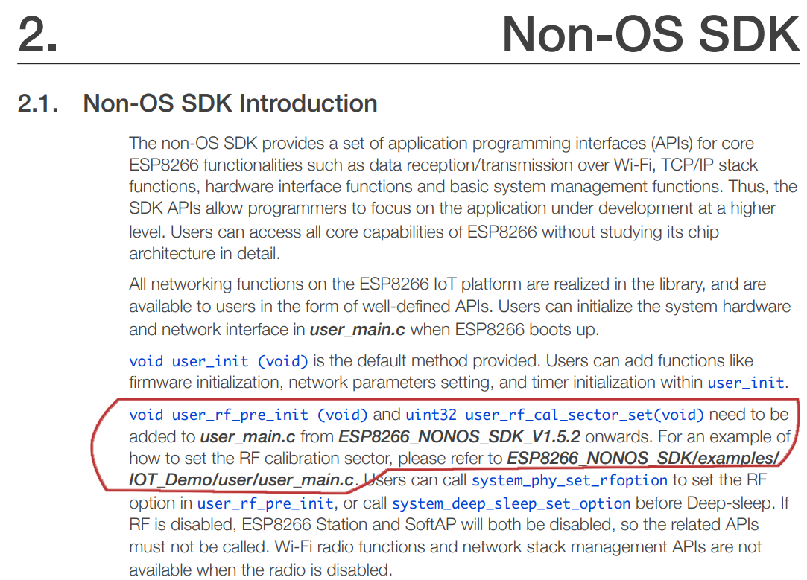
Здесь говорится, что указанные функции должны быть добавлены в один исходник с user_init(). Самостоятельно вызывать их не надо, они вызываются из SDK. Код функций был взят примера ESP8266_NONOS_SDK/examples/IOT_Demo/user/user_main.c.
У функции user_rf_cal_sector_set() имеется описание:
user_rf_cal_sector_set()
|
Назначение функции |
Устанавливает размер сектора в разделе хранения калибровочных параметров wifi модуля - RF_CAL. |
|
Прототип |
uint32 user_rf_cal_sector_set(void) |
|
Возвращаемое значение |
Размер сектора для хранения RF_CAL параметров. |
|
Примечания |
|
|
Пример |
Установка пятого сектора от конца флеш-памяти для сохранения RF_CAL параметра: uint32 user_rf_cal_sector_set(void) { enum flash_size_map size_map = system_get_flash_size_map(); uint32 rf_cal_sec = 0; switch (size_map) { case FLASH_SIZE_4M_MAP_256_256: rf_cal_sec = 128 - 5; break; case FLASH_SIZE_8M_MAP_512_512: rf_cal_sec = 256 - 5; break; case FLASH_SIZE_16M_MAP_512_512: case FLASH_SIZE_16M_MAP_1024_1024: rf_cal_sec = 512 - 5; break; case FLASH_SIZE_32M_MAP_512_512: case FLASH_SIZE_32M_MAP_1024_1024: rf_cal_sec = 512 - 5; break; case FLASH_SIZE_64M_MAP_1024_1024: rf_cal_sec = 2048 - 5; break; case FLASH_SIZE_128M_MAP_1024_1024: rf_cal_sec = 4096 - 5; break; default: rf_cal_sec = 0; break; } return rf_cal_sec; } |
ESP8266 Non-OS SDK API Reference
Думаю, не сложно заметить, что код из примера используется в вышеприведенной программе.
Итак, если светодиод на плате NodeMCU благополучно мигает и вопросов по коду больше нет, тогда переходим к установке WiFi соединения.
2) Установка WiFi соединения в режиме клиента
Как бы это не показалось странным (подводные камни, да), но первая функция которая нам понадобится для работы с wifi - это функция проверки статуса соединения wifi_station_get_connect_status():
wifi_station_get_connect_status()
|
Назначение функции |
Получить статус WiFi соединения ESP8266, работающего в режиме клиента, с точкой доступа. |
|
Прототип |
uint8 wifi_station_get_connect_status(void) |
|
Параметры |
Отсутствуют. |
|
Возвращаемое значение |
enum{ STATION_IDLE = 0, STATION_CONNECTING, STATION_WRONG_PASSWORD, STATION_NO_AP_FOUND, STATION_CONNECT_FAIL, STATION_GOT_IP }; |
|
Примечание |
В частном случае, если вы вызываете wifi_station_set_reconnect_policy для отключения автоматического переподключения (реконнекта), и при этом не вызываете wifi_set_event_handler_cb для установки обработчика изменения статуса WiFi соединения, то вызов функции wifi_station_get_connect_status() будет бесполезным и вы будет получать некорректный результат. |
ESP8266 Non-OS SDK API Reference
На основе функции wifi_station_get_connect_status() напишем функцию печати через UART статуса wifi-соединения, и добавим ее вызов в blink(). В целом программа будет выглядеть так:
#include "ets_sys.h"
#include "user_interface.h"
#include "osapi.h"
#include "gpio.h"
#include "driver/gpio16.h"
#include "driver/uart.h"
#include "espmissingincludes.h"
struct ip_info ipConfig;
static os_timer_t gpio16_timer;
uint8_t led_status;
void print_connect_status();
/******************************************************************************
* FunctionName : blink
* Description : toggle gpio16
* Parameters : none
* Returns : none
*******************************************************************************/
LOCAL void blink(void *arg) {
if (led_status)
gpio16_output_set(0x1); // High
else
gpio16_output_set(0x0); // Low
led_status= !led_status;
print_connect_status();
}
/******************************************************************************
* FunctionName : user_init
* Description : entry of user application, init user function here
* Parameters : none
* Returns : none
*******************************************************************************/
void ICACHE_FLASH_ATTR user_init(void)
{
// init varialbles
led_status=0;
// inti periphery
gpio_init();
// map GPIO16 as push-pull pin
gpio16_output_conf();
// UART config
uart_init(BIT_RATE_115200, BIT_RATE_115200);
// blink timer (1000ms, repeating)
os_timer_setfn(&gpio16_timer, (os_timer_func_t *)blink, NULL);
os_timer_arm(&gpio16_timer, 1000, 1);
os_printf("SDK version:%s\n", system_get_sdk_version());
}
void ICACHE_FLASH_ATTR
user_rf_pre_init(void)
{
}
/******************************************************************************
* FunctionName : user_rf_cal_sector_set
* Description : SDK just reversed 4 sectors, used for rf init data and paramters.
* We add this function to force users to set rf cal sector, since
* we don't know which sector is free in user's application.
* sector map for last several sectors : ABCCC
* A : rf cal
* B : rf init data
* C : sdk parameters
* Parameters : none
* Returns : rf cal sector
*******************************************************************************/
uint32 ICACHE_FLASH_ATTR
user_rf_cal_sector_set(void)
{
enum flash_size_map size_map = system_get_flash_size_map();
uint32 rf_cal_sec = 0;
switch (size_map) {
case FLASH_SIZE_4M_MAP_256_256:
rf_cal_sec = 128 - 5;
break;
case FLASH_SIZE_8M_MAP_512_512:
rf_cal_sec = 256 - 5;
break;
case FLASH_SIZE_16M_MAP_512_512:
case FLASH_SIZE_16M_MAP_1024_1024:
rf_cal_sec = 512 - 5;
break;
case FLASH_SIZE_32M_MAP_512_512:
case FLASH_SIZE_32M_MAP_1024_1024:
rf_cal_sec = 1024 - 5;
break;
case FLASH_SIZE_64M_MAP_1024_1024:
rf_cal_sec = 2048 - 5;
break;
case FLASH_SIZE_128M_MAP_1024_1024:
rf_cal_sec = 4096 - 5;
break;
default:
rf_cal_sec = 0;
break;
}
return rf_cal_sec;
}
void print_connect_status() {
uint8_t status=wifi_station_get_connect_status();
switch (status) {
case STATION_IDLE :
uart0_sendStr("\nCurrent status is: Idle\n");
break;
case STATION_CONNECTING :
uart0_sendStr("\nCurrent status is: Connecting\n");
break;
case STATION_WRONG_PASSWORD :
uart0_sendStr("\nCurrent status is: Wrong password\n");
break;
case STATION_NO_AP_FOUND :
uart0_sendStr("\nCurrent status is: No AP found\n");
break;
case STATION_CONNECT_FAIL :
uart0_sendStr("\nCurrent status is: Connect Fail\n");
break;
case STATION_GOT_IP :
uart0_sendStr("\nCurrent status is: Got IP\n");
break;
default:
os_printf("Current status is: %d\n",status);
}
if ((status == STATION_GOT_IP) && wifi_get_ip_info(STATION_IF, &ipConfig)) {
os_printf("ip: " IPSTR, IP2STR(&ipConfig.ip.addr));
}
}
Для наглядности я еще добавил печать IP-адреса в случае если ESP8266 устанавливает соединение с точкой доступа. Для получения IP используется функция wifi_get_ip_info(STATION_IF, &ipConfig):
wifi_get_ip_info
|
Назначение функции |
Получение структуры ip_info в режиме клиента или Soft-AP. |
|
Прототип |
bool wifi_set_ip_info( uint8 if_index, struct ip_info *info ) |
|
Параметры |
uint8 if_index: интерфейс для получения IP адреса: 0x00 для STATION_IF и 0х01 для SOFTAP_IF. |
|
Возвращаемое значение |
True: успешное выполнение; |
|
Примечание |
Данное API доступно после инициализации, не вызывайте его из user_init(). |
ESP8266 Non-OS SDK API Reference
При этом структура ip_info определена в заголовочном файле ip_addr.h, и имеет следующий вид:
struct ip_addr {
uint32 addr;
};
struct ip_info {
struct ip_addr ip;
struct ip_addr netmask;
struct ip_addr gw;
};
Макрос IP2STR для печати IP - определен там же:
#define ip4_addr1(ipaddr) (((uint8*)(ipaddr))[0])
#define ip4_addr2(ipaddr) (((uint8*)(ipaddr))[1])
#define ip4_addr3(ipaddr) (((uint8*)(ipaddr))[2])
#define ip4_addr4(ipaddr) (((uint8*)(ipaddr))[3])
#define ip4_addr1_16(ipaddr) ((uint16)ip4_addr1(ipaddr))
#define ip4_addr2_16(ipaddr) ((uint16)ip4_addr2(ipaddr))
#define ip4_addr3_16(ipaddr) ((uint16)ip4_addr3(ipaddr))
#define ip4_addr4_16(ipaddr) ((uint16)ip4_addr4(ipaddr))
#define IP2STR(ipaddr) ip4_addr1_16(ipaddr), \
ip4_addr2_16(ipaddr), \
ip4_addr3_16(ipaddr), \
ip4_addr4_16(ipaddr)
Итак, после компиляции прошивки ESP8266, в терминале последовательного порта можно будет увидеть такую картинку: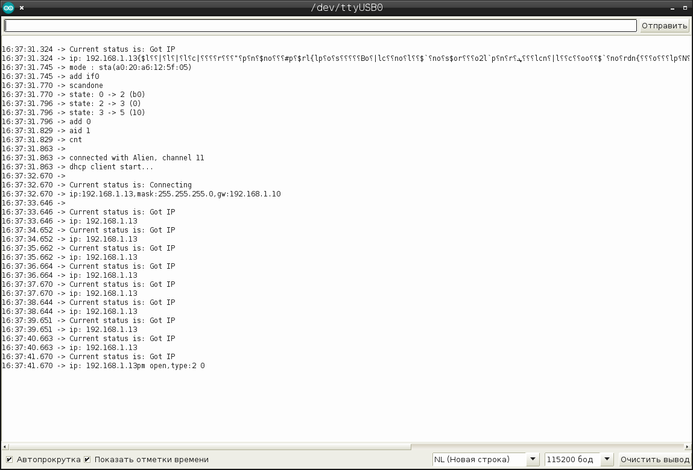
Т.е. можно видеть, что esp8266 УЖЕ установила соединение с точкой доступа, без всяких телодвижений с нашей стороны.
КАК ТАКОЕ ВОЗМОЖНО?!
Здесь можно только предполагать. В прошлой статье я упоминал о подводном камне, когда прошивка esp_open_sdk начинает работать только после того как ESP8266 предварительно прошить прошивкой с интерпретатором АТ-команд. Теперь вспоминаем. Когда мы через этот интерпретатор устанавливаем соединение с точкой доступа, то после перезагрузки ESP8266, это соединение устанавливается уже автоматически. Т.е. на флешке УЖЕ хранится режим работы WIFI-модуля, SSID точки отступа и парольная фраза. Имея эту информацию, sdk автоматически при старте устанавливает соединение, вне зависимости от того, записан ли AT-интерпретатор или программа esp-open-sdk. Само-собой, в дальнейшем мы будем самостоятельно через функции SDK устанавливать соединение с нужной точкой доступа, но про этот нюанс забывать не стоит.
Печать статуса соединения с определенным интервалом не совсем корректный подход к работе c SDK. Более корректно будет использование wifi_set_event_handler_cb() для установки обработчика изменения статуса соединения:
wifi_set_event_handler_cb
|
Назначение функции |
Установка обработчика событий WiFi |
|
Прототип |
void wifi_set_event_handler_cb(wifi_event_handler_cb_t cb) |
|
Параметры |
wifi_event_handler_cb_t cb: callback-функция |
|
Возвращаемое значение |
Отсутствует. |
|
Пример |
void wifi_handle_event_cb(System_Event_t *evt) { os_printf("event %x\n", evt->event); switch (evt->event) { case EVENT_STAMODE_CONNECTED: os_printf("connect to ssid %s, channel %d\n", evt->event_info.connected.ssid, evt->event_info.connected.channel); break; case EVENT_STAMODE_DISCONNECTED: os_printf("disconnect from ssid %s, reason %d\n", evt->event_info.disconnected.ssid, evt->event_info.disconnected.reason); break; case EVENT_STAMODE_AUTHMODE_CHANGE: os_printf("mode: %d -> %d\n", evt->event_info.auth_change.old_mode, evt->event_info.auth_change.new_mode); break; case EVENT_STAMODE_GOT_IP: os_printf("ip:" IPSTR ",mask:" IPSTR ",gw:" IPSTR, IP2STR(&evt->event_info.got_ip.ip), IP2STR(&evt->event_info.got_ip.mask), IP2STR(&evt->event_info.got_ip.gw)); os_printf("\n"); break; case EVENT_SOFTAPMODE_STACONNECTED: os_printf("station: " MACSTR "join, AID = %d\n", MAC2STR(evt->event_info.sta_connected.mac), evt->event_info.sta_connected.aid); break; case EVENT_SOFTAPMODE_STADISCONNECTED: os_printf("station: " MACSTR "leave, AID = %d\n", MAC2STR(evt->event_info.sta_disconnected.mac), evt->event_info.sta_disconnected.aid); break; default: break; } } void user_init(void) { // TODO: add your own code here.... wifi_set_event_hander_cb(wifi_handle_event_cb); } |
ESP8266 Non-OS SDK API Reference
Смысл обработчика событий WiFi состоит в том, что при любом изменении статуса WiFi-соединения вызывается данный обработчик. Именно в нём и следует размещать печать статуса соединения.
Теперь приводим программу к следующему виду:
#include "ets_sys.h"
#include "user_interface.h"
#include "osapi.h"
#include "gpio.h"
#include "driver/gpio16.h"
#include "driver/uart.h"
#include "espmissingincludes.h"
struct ip_info ipConfig;
static os_timer_t gpio16_timer;
uint8_t led_status;
void print_connect_status();
void wifi_handle_event_cb(System_Event_t *evt);
/******************************************************************************
* FunctionName : blink
* Description : toggle gpio16
* Parameters : none
* Returns : none
*******************************************************************************/
LOCAL void blink(void *arg) {
if (led_status)
gpio16_output_set(0x1); // High
else
gpio16_output_set(0x0); // Low
led_status= !led_status;
// print_connect_status();
}
/******************************************************************************
* FunctionName : user_init
* Description : entry of user application, init user function here
* Parameters : none
* Returns : none
*******************************************************************************/
void ICACHE_FLASH_ATTR user_init(void)
{
// init varialbles
led_status=0;
// inti periphery
gpio_init();
// map GPIO16 as push-pull pin
gpio16_output_conf();
// UART config
uart_init(BIT_RATE_115200, BIT_RATE_115200);
// blink timer (1000ms, repeating)
os_timer_setfn(&gpio16_timer, (os_timer_func_t *)blink, NULL);
os_timer_arm(&gpio16_timer, 1000, 1);
os_printf("SDK version:%s\n", system_get_sdk_version());
// wifi connect
wifi_set_event_handler_cb(wifi_handle_event_cb);
}
void ICACHE_FLASH_ATTR
user_rf_pre_init(void)
{
}
/******************************************************************************
* FunctionName : user_rf_cal_sector_set
* Description : SDK just reversed 4 sectors, used for rf init data and paramters.
* We add this function to force users to set rf cal sector, since
* we don't know which sector is free in user's application.
* sector map for last several sectors : ABCCC
* A : rf cal
* B : rf init data
* C : sdk parameters
* Parameters : none
* Returns : rf cal sector
*******************************************************************************/
uint32 ICACHE_FLASH_ATTR
user_rf_cal_sector_set(void)
{
enum flash_size_map size_map = system_get_flash_size_map();
uint32 rf_cal_sec = 0;
switch (size_map) {
case FLASH_SIZE_4M_MAP_256_256:
rf_cal_sec = 128 - 5;
break;
case FLASH_SIZE_8M_MAP_512_512:
rf_cal_sec = 256 - 5;
break;
case FLASH_SIZE_16M_MAP_512_512:
case FLASH_SIZE_16M_MAP_1024_1024:
rf_cal_sec = 512 - 5;
break;
case FLASH_SIZE_32M_MAP_512_512:
case FLASH_SIZE_32M_MAP_1024_1024:
rf_cal_sec = 1024 - 5;
break;
case FLASH_SIZE_64M_MAP_1024_1024:
rf_cal_sec = 2048 - 5;
break;
case FLASH_SIZE_128M_MAP_1024_1024:
rf_cal_sec = 4096 - 5;
break;
default:
rf_cal_sec = 0;
break;
}
return rf_cal_sec;
}
void print_connect_status() {
uint8_t status=wifi_station_get_connect_status();
switch (status) {
case STATION_IDLE :
uart0_sendStr("\nCurrent status is: Idle\n");
break;
case STATION_CONNECTING :
uart0_sendStr("\nCurrent status is: Connecting\n");
break;
case STATION_WRONG_PASSWORD :
uart0_sendStr("\nCurrent status is: Wrong password\n");
break;
case STATION_NO_AP_FOUND :
uart0_sendStr("\nCurrent status is: No AP found\n");
break;
case STATION_CONNECT_FAIL :
uart0_sendStr("\nCurrent status is: Connect Fail\n");
break;
case STATION_GOT_IP :
uart0_sendStr("\nCurrent status is: Got IP\n");
break;
default:
os_printf("Current status is: %d\n",status);
}
if ((status == STATION_GOT_IP) && wifi_get_ip_info(STATION_IF, &ipConfig)) {
os_printf("ip: " IPSTR, IP2STR(&ipConfig.ip.addr));
}
}
void wifi_handle_event_cb(System_Event_t *evt) {
os_printf("event %x: ", evt->event);
switch (evt->event) {
case EVENT_STAMODE_CONNECTED:
uart0_sendStr("EVENT_STAMODE_CONNECTED\n");
os_printf("connect to ssid %s, channel %d\n",
evt->event_info.connected.ssid,
evt->event_info.connected.channel);
break;
case EVENT_STAMODE_DISCONNECTED:
uart0_sendStr("EVENT_STAMODE_DISCONNECTED\n");
os_printf("disconnect from ssid %s, reason %d\n",
evt->event_info.disconnected.ssid,
evt->event_info.disconnected.reason);
break;
case EVENT_STAMODE_AUTHMODE_CHANGE:
uart0_sendStr("EVENT_STAMODE_AUTHMODE_CHANGE\n");
os_printf("mode: %d -> %d\n",
evt->event_info.auth_change.old_mode,
evt->event_info.auth_change.new_mode);
break;
case EVENT_STAMODE_GOT_IP:
uart0_sendStr("EVENT_STAMODE_GOT_IP\n");
os_printf("ip:" IPSTR ",mask:" IPSTR ",gw:" IPSTR,
IP2STR(&evt->event_info.got_ip.ip),
IP2STR(&evt->event_info.got_ip.mask),
IP2STR(&evt->event_info.got_ip.gw));
os_printf("\n");
break;
case EVENT_SOFTAPMODE_STACONNECTED:
uart0_sendStr("EVENT_SOFTAPMODE_STACONNECTED\n");
os_printf("station: " MACSTR "join, AID = %d\n",
MAC2STR(evt->event_info.sta_connected.mac),
evt->event_info.sta_connected.aid);
break;
case EVENT_SOFTAPMODE_STADISCONNECTED:
uart0_sendStr("EVENT_SOFTAPMODE_STADISCONNECTED\n");
os_printf("station: " MACSTR "leave, AID = %d\n",
MAC2STR(evt->event_info.sta_disconnected.mac),
evt->event_info.sta_disconnected.aid);
break;
default:
break;
}
}
В случае успешной компиляции и прошивки, в терминале мы должны получть следующую картинку: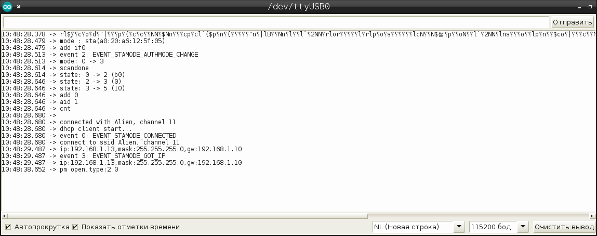
Здесь у нас получается уже небольшой лог, по которому можно видеть, что после загрузки WiFi модуль сначала переходит в режим клиента, потом он по о всей видимости сканирует доступные точки доступа, затем устанавливает соединение с своей точкой доступа, и через DHCP получает IP адрес.
Теперь, когда мы представляем в каком состоянии изначально находится WiFi модуль, мы можем осуществить переподключение к нужной нам точке доступа. Для это нам понадобятся следующие функции SDK:
Функция подключения к точке доступа:
wifi_station_connect
|
Назначение функции |
Подключение WiFi модуля находящегося в режиме клиента (station) к точке доступа (AP). |
|
Прототип |
void wifi_station_clear_username (void) |
|
Параметры |
Отсутствуют. |
|
Возвращаемое значение |
True: успешное выполнение; |
|
Примечание |
Если ESP8266 уже подключен к роутеру, то перед вызовом wifi_station_connect нужно будет вызвать функцию wifi_station_disconnect(). |
ESP8266 Non-OS SDK API Reference
Функция отключения от точки доступа:
wifi_station_disconnect
|
Назначение функции |
Отключение WiFi модуля находящегося в режиме клиента (station) от точки доступа (AP). |
|
Прототип |
void wifi_station_clear_username (void) |
|
Параметры |
Отсутствуют. |
|
Возвращаемое значение |
True: успешное выполнение; |
|
Примечание |
Не вызывайте данную функцию в user_init(). Ее вызов должен происходить после инициализации, а ESP8266 должен находится в режиме клиента (station). |
ESP8266 Non-OS SDK API Reference
Функция установки режима работы WiFi модуля:
wifi_set_opmode
|
Назначение функции |
Устанавливает режим работы WiFi модуля: Station, SoftAP или Station + SoftAP режим. По умолчанию устанавливается SoftAP режим. |
|
Прототип |
bool wifi_set_opmode (uint8 opmode) |
|
Параметры |
uint8 opmode: режим работы WiFi модуля:
|
|
Возвращаемое значение |
True: успешное выполнение; |
|
Примечание |
В версиях SDK до ESP8266_NONOS_SDK_V0.9.2, необходимо вызывать system_restart() после вызова данной функции. В версиях SDK от ESP8266_NONOS_SDK_V0.9.2 и выше, такой необходимости нет. |
ESP8266 Non-OS SDK API Reference
Функция задания массива настроек WiFi модуля в режиме клиента (station):
wifi_station_set_config
|
Назначение функции |
Устанавливает конфигурацию WiFi модуля для работы в режиме клиента, и сохраняет ее во флеш-памяти. |
|
Прототип |
bool wifi_station_set_config (struct station_config *config) |
|
Параметры |
struct station_config *config: указатель на структуру с конфигурацией WiFi модуля в режиме клиента. |
|
Возвращаемое значение |
True: успешное выполнение; |
|
Пример |
void ICACHE_FLASH_ATTR user_set_station_config(void) { char ssid[32] = SSID; char password[64] = PASSWORD; struct station_config stationConf; stationConf.bssid_set = 0; //need not check MAC address of AP os_memcpy(&stationConf.ssid, ssid, 32); os_memcpy(&stationConf.password, password, 64); wifi_station_set_config(&stationConf); } void user_init(void) { wifi_set_opmode(STATIONAP_MODE); //Set softAP + station mode user_set_station_config(); } |
|
Примечание |
Данная функция может быть вызвана только если WiFi модуль ESP8266 находится в режиме клиента (station). |
ESP8266 Non-OS SDK API Reference
где структура station_config определена в заголовочном файле user_interface.h и имеет следующий вид:
struct station_config {
uint8 ssid[32];
uint8 password[64];
uint8 bssid_set; // Note: If bssid_set is 1, station will just connect to the router
// with both ssid[] and bssid[] matched. Please check about this.
uint8 bssid[6];
};
Процедура подключения к точке доступа в режиме клиента состоит из двух шагов: а) переход в режим клиента; б) установка структуры station_config. Структуру можно либо создать во время инициализации, заполнив нужные поля своими значениями, либо получить текущую структуру с помощью функции wifi_station_get_config() и изменив нужные поля, передать её обратно в ESP8266.
С учетом всего вышесказанного, окончательный вариант user_init() для установки соединения с точной доступа, примет следующий вид:
static struct station_config wifi_config;
void ICACHE_FLASH_ATTR user_init(void)
{
// init varialbles
led_status=0;
// inti periphery
gpio_init();
// map GPIO16 as push-pull pin
gpio16_output_conf();
// UART config
uart_init(BIT_RATE_115200, BIT_RATE_115200);
// blink timer (1000ms, repeating)
os_timer_setfn(&gpio16_timer, (os_timer_func_t *)blink, NULL);
os_timer_arm(&gpio16_timer, 1000, 1);
os_printf("SDK version:%s\n", system_get_sdk_version());
// wifi connect
wifi_set_event_handler_cb(wifi_handle_event_cb);
if (wifi_set_opmode(STATION_MODE)) {
wifi_station_disconnect();
os_memcpy(wifi_config.ssid, SSID, sizeof(SSID));
os_memcpy(wifi_config.password, PASSWORD, sizeof(PASSWORD));
wifi_config.bssid_set=0;
wifi_station_set_config(&wifi_config);
} else
uart0_sendStr("ERROR: setting the station mode has failed.\n");
}
При этом, в заголовочном файле user_config.h должны находится данные для подключения к точке доступа:
#define SSID "YOUR_SSID"
#define PASSWORD "YOUR_PASSWORD"
3) Работа с TCP соединением используя espconn
После того, как мы установили соединение с точкой доступа, следует разобраться с установкой TCP-соединения, чтобы иметь возможность передавать и принимать данные с сервера.
Работа с TCP соединением в SDK ESP8266 осуществляется с помощью механизма espconn. Насколько понимаю, это проприетарный форк LwIP - библиотеки реализации TCP/IP стека для встраиваемых устройств. В SDK входит и сам LwIP, но мне, для начала, хотелось бы разобрать работу со штатной библиотекой. В руководстве ESP8266 Non-OS SDK API Reference она описана в качестве набора функций в главе 4 "TCP/UDP APIs". К сожалению, в данном руководстве ничего не было сказано про порядок работы с данным API. Поэтому за примерами пришлось лезть на github.com. В принципе, далеко ходить не пришлось, и на небезызвестном github.com/esp8266 был найден простой пример связи с dweet.io и передачи данных в JSON формате. Другой пример, который мне показался полезным, можно найти в examples SDK под названием "at_espconn".
Для начала, мне хотелось бы разобрать пример подключения по HTTP протоколу с использованием GET запроса. Попробуем просто скачать HTML-станицу со своего сервера, т.е. реализуем программными средствами пример из ноябрьской статьи: "13) Получение web-страницы или текстового файла от сервера на OpenWRT".
Итак, работа с TCP соединением через espconn производится через коллбэк-функции. Т.е. вы пришите свои функции на открытие TCP соединения, закрытие TCP соединения, на прием и передачу данных и т.е. Совсем не обязательно писать все коллбэк-функции, пишите только те, что вам необходимо. Очевидно, что перед созданием TCP соединения необходимо будет задать адрес и порт. Т.о., отталкиваясь от предыдущего примера, делаем следующее:
Добавляем заголовочные файлы с объявлением функций espconn и функций для работы с памятью:
#include "espconn.h"
#include "mem.h"
Добавляем ip-адрес и порт целевого сервера:
#define http_port 8010
#define ip_addr "192.168.1.10" // Alien
Добавляем буфер, в котором будут храниться передаваемые и получаемые данные:
char buffer[512];
Если ваши данные небольшие по размеру, то буфер можно задать статично, как показано выше. Иначе имеет смысл использовать динамическое выделение памяти под массив.
Добавляем объявление коллбэк-функций:
void tcp_connected(void *arg);
static void ICACHE_FLASH_ATTR data_received_cb(void *arg, char *pdata, unsigned short len);
static void ICACHE_FLASH_ATTR tcp_disconnected_cb(void *arg);
И теперь собственно пишем функцию установки TCP-соединения:
static void ICACHE_FLASH_ATTR send_data() {
uint32 ip=0;
struct espconn *conn = (struct espconn *)os_zalloc(sizeof(struct espconn));
if (conn != NULL) {
conn->type = ESPCONN_TCP;
conn->state = ESPCONN_NONE;
conn->proto.tcp = (esp_tcp *)os_zalloc(sizeof(esp_tcp));
conn->proto.tcp->local_port = espconn_port();
conn->proto.tcp->remote_port = http_port;
ip = ipaddr_addr(ip_addr);
os_memcpy(conn->proto.tcp->remote_ip,&ip,sizeof(ip));
espconn_regist_connectcb(conn, tcp_connected);
espconn_regist_disconcb(conn, tcp_disconnected_cb);
espconn_regist_recvcb(conn, data_received_cb);
espconn_connect(conn);
} else
uart0_sendStr("TCP connect failed!\r\n");
}
Принцип работы походит на установку WiFi-соединения. Сначала создается структура типа espconn, далее заполняются ее поля, регестрируются коллбэк функции, после чего структура "скармливается" функции espconn_connect в качестве значения.
Вызов функции send_data() добавим в коллбэк-функцию void wifi_handle_event_cb(System_Event_t *evt)
case EVENT_STAMODE_GOT_IP:
uart0_sendStr("EVENT_STAMODE_GOT_IP\n");
os_printf("ip:" IPSTR ",mask:" IPSTR ",gw:" IPSTR,
IP2STR(&evt->event_info.got_ip.ip),
IP2STR(&evt->event_info.got_ip.mask),
IP2STR(&evt->event_info.got_ip.gw));
os_printf("\n");
send_data();
break;
Т.е. функция send_data() будет вызвана сразу после подключения к точке доступа WiFi.
Коллбэк функции: tcp_connected(void *arg), data_received_cb(void *arg, char *pdata, unsigned short len) и tcp_disconnected_cb(void *arg) выглядят следующим образом.
Функция tcp_connected(void *arg):
void tcp_connected(void *arg)
{
struct espconn *conn = arg;
os_printf("%s\n", __FUNCTION__ );
os_sprintf(buffer, "GET / HTTP/1.1\r\n\r\n");
os_printf("Sending: %s\n", buffer);
espconn_sent(conn, buffer, os_strlen(buffer));
}
Эта функция будет вызываться первой, в начале установки TCP соединения. Здесь строка: os_printf("%s\n", __FUNCTION__ ) выполняет отладочную роль, она будет печатать имя функции, т.е. tcp_connected. Далее: os_sprintf(buffer, "GET / HTTP/1.1\r\n\r\n") - копирует строку c GET-запросом в буфер. Строка: os_printf("Sending: %s\n", buffer) - выполняет опять же отладочную функцию, отображает содержимое буфера. И собственно: espconn_sent(conn, buffer, os_strlen(buffer)) передает содержимое буфера на удаленный сервер.
Коллбэк-функция data_received_cb() обрабатывает ответ уделенного сервера:
static void ICACHE_FLASH_ATTR data_received_cb(void *arg, char *pdata, unsigned short len )
{
struct espconn *conn = (struct espconn *)arg;
os_printf( "%s: %s\n", __FUNCTION__, pdata);
espconn_disconnect(conn);
}
Через указатель на массив *pdata передается сам ответ, который функция os_printf( "%s: %s\n", __FUNCTION__, pdata) передает на последовательный порт. После этого, с помощью espconn_disconnect(conn) TCP-соединение разрывается.
В момент разрыва TCP-соединения вызывается коллбэк-функция tcp_disconnected_cb:
static void ICACHE_FLASH_ATTR tcp_disconnected_cb(void *arg)
{
struct espconn *conn = (struct espconn *)arg;
os_printf( "%s\n", __FUNCTION__ );
os_printf("esp8266 disconnected\r\n");
wifi_station_disconnect();
}
Она разрывает соединение с точкой доступа с помощью вызова функции SDK: wifi_station_disconnect().
Таким образом, алгоритм работы программы выглядит так:
Полный текст программы можно просмотреть под спойлером:
показать полный текст программы
После компиляции и прошивки esp8266, лог работы программы будет выглядеть так:
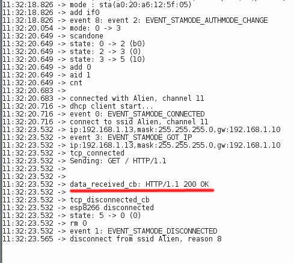
Здесь хочу обратить внимание на то, что в качестве ответа веб-сервера мы получаем лишь 200-ий код ответа.
Теперь напомню, как выглядела TCP-сессия с помощью AT-команд:
>
Recv 18 bytes
SEND OK
+IPD,17:HTTP/1.0 200 OK
+IPD,450:Connection: close
ETag: "6004-111-5be409c1"
Last-Modified: Thu, 08 Nov 2018 10:02:41 GMT
Date: Thu, 15 Nov 2018 20:00:08 GMT
Content-Type: text/html
Content-Length: 273
<?xml version="1.0" encoding="utf-8"?>
<!DOCTYPE html PUBLIC "-//W3C//DTD XHTML 1.1//EN" "http://www.w3.org/TR/xhtml11/DTD/xhtml11.dtd">
<html xmlns="http://www.w3.org/1999/xhtml">
<head>
</head>
<body style="background-color: white">
<h3>Hello World!</h3>
</body>
</html>
CLOSED
Здесь ответ приходил двумя "чанками", после чего сервер САМОСТОЯТЕЛЬНО закрывал TCP-соединение. Т.е. если мы закомментируем строку с "espconn_disconnect(conn);", то получим полный ответ сервера:
12:35:42.321 -> mode : sta(a0:20:a6:12:5f:05)
12:35:42.321 -> add if0
12:35:42.321 -> event 8: event 2: EVENT_STAMODE_AUTHMODE_CHANGE
12:35:43.680 -> mode: 0 -> 3
12:35:44.277 -> scandone
12:35:44.310 -> state: 0 -> 2 (b0)
12:35:44.310 -> state: 2 -> 3 (0)
12:35:44.310 -> state: 3 -> 5 (10)
12:35:44.310 -> add 0
12:35:44.310 -> aid 1
12:35:44.310 -> cnt
12:35:44.343 ->
12:35:44.343 -> connected with Alien, channel 11
12:35:44.343 -> dhcp client start...
12:35:44.376 -> event 0: EVENT_STAMODE_CONNECTED
12:35:44.376 -> connect to ssid Alien, channel 11
12:35:47.160 -> ip:192.168.1.13,mask:255.255.255.0,gw:192.168.1.10
12:35:47.160 -> event 3: EVENT_STAMODE_GOT_IP
12:35:47.193 -> ip:192.168.1.13,mask:255.255.255.0,gw:192.168.1.10
12:35:47.193 -> tcp_connected
12:35:47.193 -> Sending: GET / HTTP/1.1
12:35:47.193 ->
12:35:47.193 ->
12:35:47.193 -> data_received_cb: HTTP/1.1 200 OK
12:35:47.193 ->
12:35:47.193 -> data_received_cb: Connection: close
12:35:47.193 -> ETag: "6008-111-5bee9a9f"
12:35:47.193 -> Last-Modified: Fri, 16 Nov 2018 10:23:27 GMT
12:35:47.193 -> Date: Wed, 15 May 2019 08:36:07 GMT
12:35:47.193 -> Content-Type: text/html
12:35:47.227 -> Content-Length: 273
12:35:47.227 -> Transfer-Encoding: chunked
12:35:47.227 ->
12:35:47.227 -> 111
12:35:47.227 -> <?xml version="1.0" encoding="utf-8"?>
12:35:47.227 -> <!DOCTYPE html PUBLIC "-//W3C//DTD XHTML 1.1//EN" "http://www.w3.org/TR/xhtml11/DTD/xhtml11.dtd">
12:35:47.227 -> <html xmlns="http://www.w3.org/1999/xhtml">
12:35:47.227 -> <head>
12:35:47.227 -> </head>
12:35:47.227 -> <body style="background-color: white">
12:35:47.227 -> <h3>Hello World!</h3>
12:35:47.227 -> </body>
12:35:47.227 -> </html>
12:35:47.227 ->
12:35:47.227 -> 0
12:35:47.227 ->
12:35:47.227 ->
12:35:47.227 -> tcp_disconnected_cb
12:35:47.227 -> esp8266 disconnected
12:35:47.259 -> state: 5 -> 0 (0)
12:35:47.259 -> rm 0
12:35:47.259 -> event 1: EVENT_STAMODE_DISCONNECTED
12:35:47.259 -> disconnect from ssid Alien, reason 8
Для контроля, в Wireshark можно посмотреть лог трафика генерируемого esp8266 в течении сессии: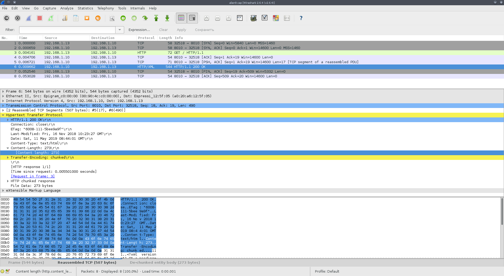
Каких-либо ошибок не наблюдается. Отмечу, что в Wireshark трафик отфильтрован по порту веб-сервера. В данном случае это 8010.
4) Использование режима энергосбережения "deep sleep"
Теперь попробуем адаптировать алгоритм нашей программы ближе к реальной задаче. Для этого, ее работа должна выглядеть следующем образом: 1) esp8266 стартует, соединяется с точкой доступа, передает или принимает какие-то данные, после чего отключается от точки доступа. 2) после выполнения первой задачи, пусть esp8266 уходит в спящий режим, по выходу их которого он будет "дергать" RESET, в результате чего esp8266 перезагрузится и все начнётся заново.
Для осуществления этой задачи нам придется выкинуть из программы мигалку на светодиоде. Т.к. большую часть времени esp8266 будет находиться в режиме пониженного энергопотребления, в котором мигать чем либо уже не получиться. Кроме того, светодиод мигалки находиться на GPIO16 который принадлежит RTC, и он нам понадобится для пробуждения из спящего режима.
Работа eps8266 в режиме энергосбережении описана в следующем руководстве: ESP8266 Low Power Solutions
Согласно пункту 4.5 этого руководства, чтобы перевести esp8266 в режим пониженного энергосбережения deep_sleep, после завершения соединения с точкой доступа, достаточно будет добавить в CASE функции wifi_handle_event_cb(System_Event_t *evt) две сточки кода:
case EVENT_STAMODE_DISCONNECTED:
uart0_sendStr("EVENT_STAMODE_DISCONNECTED\n");
os_printf("disconnect from ssid %s, reason %d\n",
evt->event_info.disconnected.ssid,
evt->event_info.disconnected.reason);
system_deep_sleep_instant(60000*1000); // 60 sec
system_deep_sleep_set_option(2);
break;
где system_deep_sleep_instant(60000*1000) - задает время пробуждения в микросекундах, а system_deep_sleep_set_option(2) - задает режим энергосбережения который не требует перекалибровки радочастотного модуля.
Полный текст обновленной программы можно посмотреть под спойлером:
показать полный текст программы
Не забывайте, что из Makefile следует убрать сборку модуля gpio16.o. Кроме того, вывод D0/GPIO16 нужно будет соединить с RESET, чтобы esp8266 смог "проснуться":
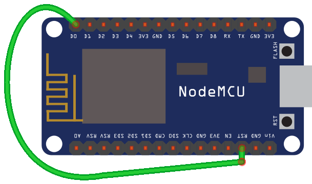
Есть еще один неприятный подводный камень при использовании режима пониженного энергопотребления deep_sleep. Проблема проявлется в невозможности прошить плату esp8266 nodemcu с помощью автоматической загрузки прошивки. Выглядит это как-то так:
$ make install
esptool.py write_flash 0 connect.elf-0x00000.bin 0x10000 connect.elf-0x10000.bin
esptool.py v2.3.1
Connecting....
Detecting chip type... ESP8266
Chip is ESP8266EX
Features: WiFi
Uploading stub...
Running stub...
Stub running...
Configuring flash size...
Warning: Could not auto-detect Flash size (FlashID=0x0, SizeID=0x0), defaulting to 4MB
Flash params set to 0x0040
Compressed 33792 bytes to 23461...
A fatal error occurred: Timed out waiting for packet content
Makefile:24: ошибка выполнения рецепта для цели «install»
make: *** [install] Ошибка 2
В этом случае, чтобы прошить esp8266 нужно: а) отключить esp8266 от питания; б) зажать кнопку BOOT; в) подключить питание к esp8266 (кнопка BOOT при этом должна быть зажата); г) запустить прошивку esp8266, кнопку BOOT при этом можно освободить; д) после завершения прошивки, следует переподключить питание esp8266 (кнопка BOOT при этом должна быть свободной).
Еще одной полезной возможностью мне показалась команда ping. Она имеется в AT командах, здесь же я хочу показать как она реализуется возможностями SDK.
Структуры и функции SDK для реализации команды ping объявлены в заголовочном файле ping.h, в папке с заголовочными файлами SDK. Описания в документации нет, т.е. они не документированы.
Рабочий пример реализации команды ping я встретил на форуме espressif: Ping_start function - ESP8266 Developer Zone. На всякий случай я скопирую его сюда:
void ICACHE_FLASH_ATTR
user_ping_recv(void *arg, void *pdata)
{
struct ping_resp *ping_resp = pdata;
struct ping_option *ping_opt = arg;
if (ping_resp->ping_err == -1)
os_printf("ping host fail \r\n");
else
os_printf("ping recv: byte = %d, time = %d ms \r\n",ping_resp->bytes,ping_resp->resp_time);
}
void ICACHE_FLASH_ATTR
user_ping_sent(void *arg, void *pdata)
{
os_printf("user ping finish \r\n");
}
void ICACHE_FLASH_ATTR
user_test_ping(void)
{
struct ping_option *ping_opt = NULL;
const char* ping_ip = "192.168.1.114";
ping_opt = (struct ping_option *)os_zalloc(sizeof(struct ping_option));
ping_opt->count = 10; // try to ping how many times
ping_opt->coarse_time = 2; // ping interval
ping_opt->ip = ipaddr_addr(ping_ip);
ping_regist_recv(ping_opt,user_ping_recv);
ping_regist_sent(ping_opt,user_ping_sent);
ping_start(ping_opt);
}
Думаю, что если вы дочитали до этого места, то вопросов здесь возникнуть не должно. Я без изменений скопировал этот код в свою программу, заменил вызов функции send_data() на user_test_ping() и получил такой результат:
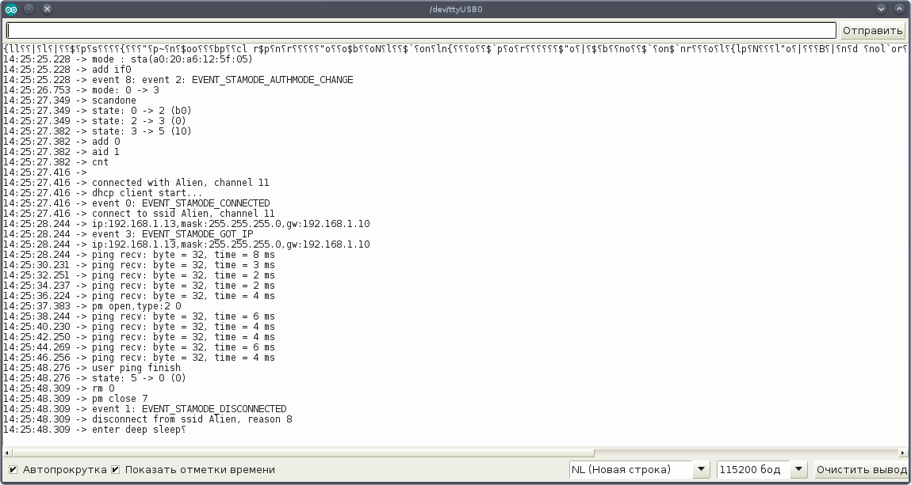
Здесь в качестве ip я указал ip точки доступа, т.е. 192.168.1.10.
Лог сетевого трафика в этом с случае выглядит так: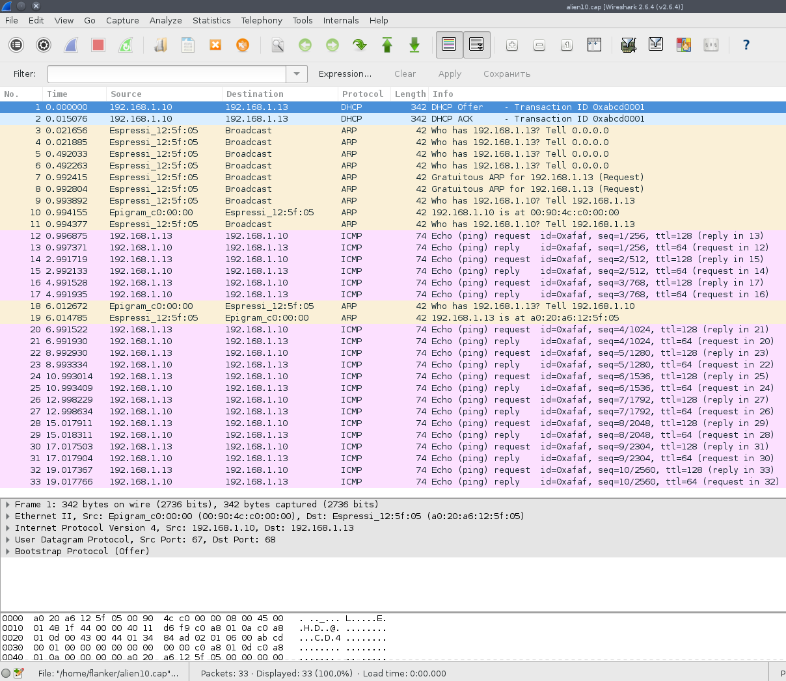
Однако данный вариант реализации команды ping требует указания IP целевого хоста, в то время как часто бывает нужно пропинговать хост по доменному имени. Функция SDK которая возвращает IP доменного имени назвается espconn_gethostbyname(). Наглядное использование этой функции имеется в приведенном выше примере.
Действуя по аналогии, поместим вызов этой функции в кейс функции wifi_handle_event_cb(System_Event_t *evt), который вызывается при установлении соединения с точкой доступа
case EVENT_STAMODE_GOT_IP:
uart0_sendStr("EVENT_STAMODE_GOT_IP\n");
os_printf("ip:" IPSTR ",mask:" IPSTR ",gw:" IPSTR,
IP2STR(&evt->event_info.got_ip.ip),
IP2STR(&evt->event_info.got_ip.mask),
IP2STR(&evt->event_info.got_ip.gw));
os_printf("\n");
espconn_gethostbyname(&ping_conn, ping_host, &ping_ip, dns_done);
break;
Здесь: ping_conn - это структура espconn, ping_host - доменное имя, ping_ip - IP хоста которое следует найти, а dns_done - это коллбэк функция которая вызвается после получения IP хоста от DNS - сервера.
struct espconn ping_conn;
char ping_host[] = "ya.ru";
ip_addr_t ping_ip;
Функция dns_done() в таком случае примет такой вид:
void ICACHE_FLASH_ATTR dns_done(const char *name, ip_addr_t *ipaddr, void *arg )
{
struct espconn *conn = (struct espconn *)arg;
espconn_disconnect(conn);
os_printf("%s\n", __FUNCTION__);
if (ipaddr != NULL)
user_test_ping(ipaddr);
else
os_printf("DNS lookup failed\n");
}
Функция user_test_ping() незначительно меняется, она теперь принимает в качестве параметра IP-адрес:
void ICACHE_FLASH_ATTR user_test_ping(ip_addr_t *ipaddr) {
struct ping_option *ping_opt = NULL;
// const char* ping_ip = "8.8.8.8";
ping_opt = (struct ping_option *)os_zalloc(sizeof(struct ping_option));
os_printf("ping to: " IPSTR, IP2STR(&ipaddr->addr));
os_printf("\n");
ping_opt->count = 10; // try to ping how many times
ping_opt->coarse_time = 2; // ping interval
// ping_opt->ip = ipaddr_addr(ping_ip);
ping_opt->ip = ipaddr->addr;
ping_regist_recv(ping_opt,user_ping_recv);
ping_regist_sent(ping_opt,user_ping_sent);
ping_start(ping_opt);
}
Полный текст программы можно посмотреть под спойлером.
показать полный текст программы
При работе программы, в терминале будет наблюдаться такой лог: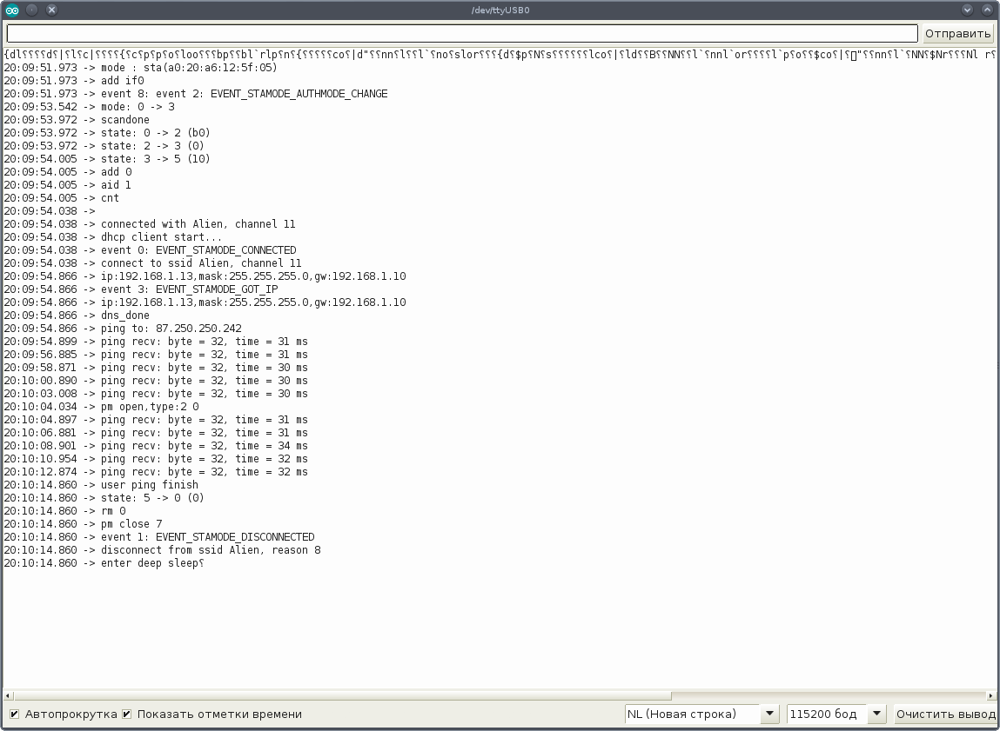
В Wireshark можно будет наблюдать два DNS пакета: запрос к DNS серверу, и последующий ответ от него: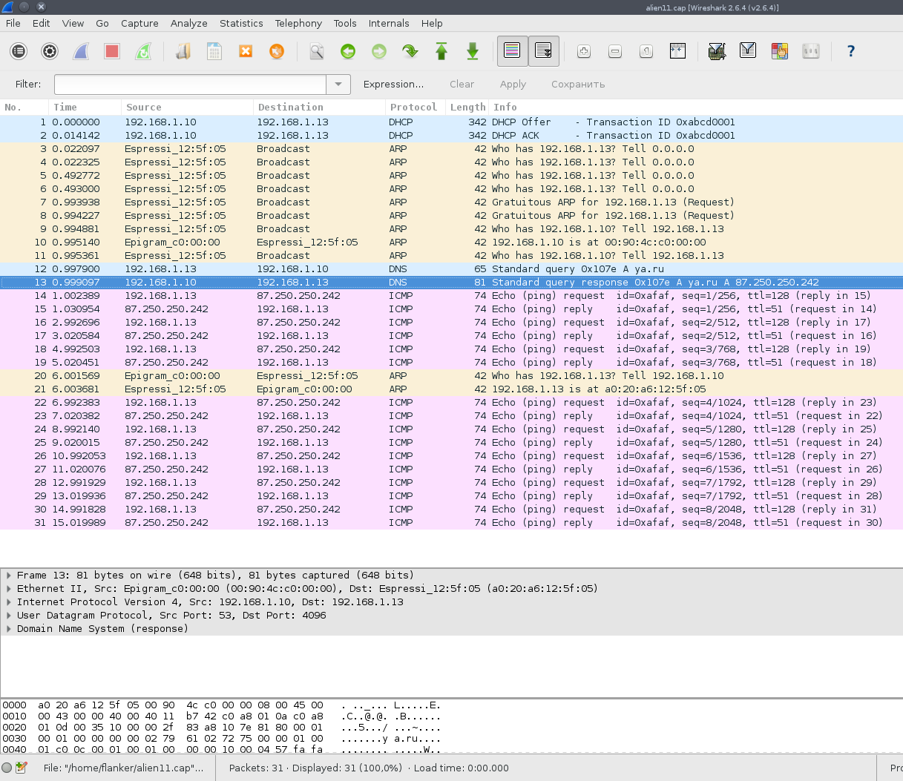
6) Получение даты и времени из сети по протоколу SNTP
Последний пример, который мне хотелось бы привести - это синхронизация времени по протоколу SNTP. API для работы с протоколом SNTP приведено в части 3.13 руководства ESP8266 Non-OS SDK API Reference. Описание функций очень краткое, формальное. К счастью, там же есть рабочий пример использования этого API.
В качестве основы для портирования (красивое слово для банальной копипасты ;) этого примера, я взял код из части 4 данной статьи, там где речь шла про установку TCP - соединения. Алгоритм пусть будет такой. После соединения с точкой доступа, производится инициализация SNTP. Во время инициализации указывается список SNTP-cерверов и регистрируется коллбек-функция вызываемая по таймеру. После этого запускается таймер этой функции.
На практике это будет выглядеть так. В кейс функции wifi_handle_event_cb(System_Event_t *evt) отвечающий за установку соединения с точкой доступа помещаем код из примера в части 3.13 руководства ESP8266 Non-OS SDK API Reference:
case EVENT_STAMODE_GOT_IP:
uart0_sendStr("EVENT_STAMODE_GOT_IP\n");
os_printf("ip:" IPSTR ",mask:" IPSTR ",gw:" IPSTR,
IP2STR(&evt->event_info.got_ip.ip),
IP2STR(&evt->event_info.got_ip.mask),
IP2STR(&evt->event_info.got_ip.gw));
os_printf("\n");
// SNTP enable
ip_addr_t *addr = (ip_addr_t *)os_zalloc(sizeof(ip_addr_t));
sntp_setservername(0, "0.ru.pool.ntp.org"); // set server 0 by domain name
sntp_setservername(1, "1.ru.pool.ntp.org"); // set server 1 by domain name
// ipaddr_aton("210.72.145.44", addr);
uint32 ip = ipaddr_addr("192.168.1.10"); // Alien
os_memcpy(addr,&ip,sizeof(ip));
sntp_setserver(2, addr); // set server 2 by IP address
sntp_set_timezone(+4); // set SAMT time zone
sntp_init();
os_free(addr);
// Set a timer to check SNTP timestamp
os_timer_disarm(&sntp_timer);
os_timer_setfn(&sntp_timer, (os_timer_func_t *)user_check_sntp_stamp, NULL);
os_timer_arm(&sntp_timer, 100, 0);
break;
Здесь я немного изменил код в сравнении с оригиналом, т.к. функции ipaddr_aton() я не нашел, поэтому пришлось импровизировать. Указано IP моего домашнего сервера с OpenWRT, на котором установлен SNTP сервер. Также добавлена функция с установкой часового пояса. В данном случае устанавливается самарский часовой пояс. По умолчанию время синхронизируется по пекинскому часовому поясу, а не по Гринвичу, как следовало бы ожидать.
В области глобальный переменных нужно не забыть объявить таймер:
LOCAL os_timer_t sntp_timer;
Коллбек-функция копируется практически без изменений:
void ICACHE_FLASH_ATTR user_check_sntp_stamp(void *arg){
uint32 current_stamp;
current_stamp = sntp_get_current_timestamp();
if(current_stamp == 0){
os_timer_arm(&sntp_timer, 100, 0);
} else{
os_timer_disarm(&sntp_timer);
os_printf("sntp: %d, %s \n",current_stamp, sntp_get_real_time(current_stamp));
// TCP connection
send_data();
}
}
Здесь, в случае успешного получения текущего времени отключается таймер, и управление передается функции send_data().
Полный текст программы можно посмотреть под спойлером:
показать полный текст программы
Лог работы программы: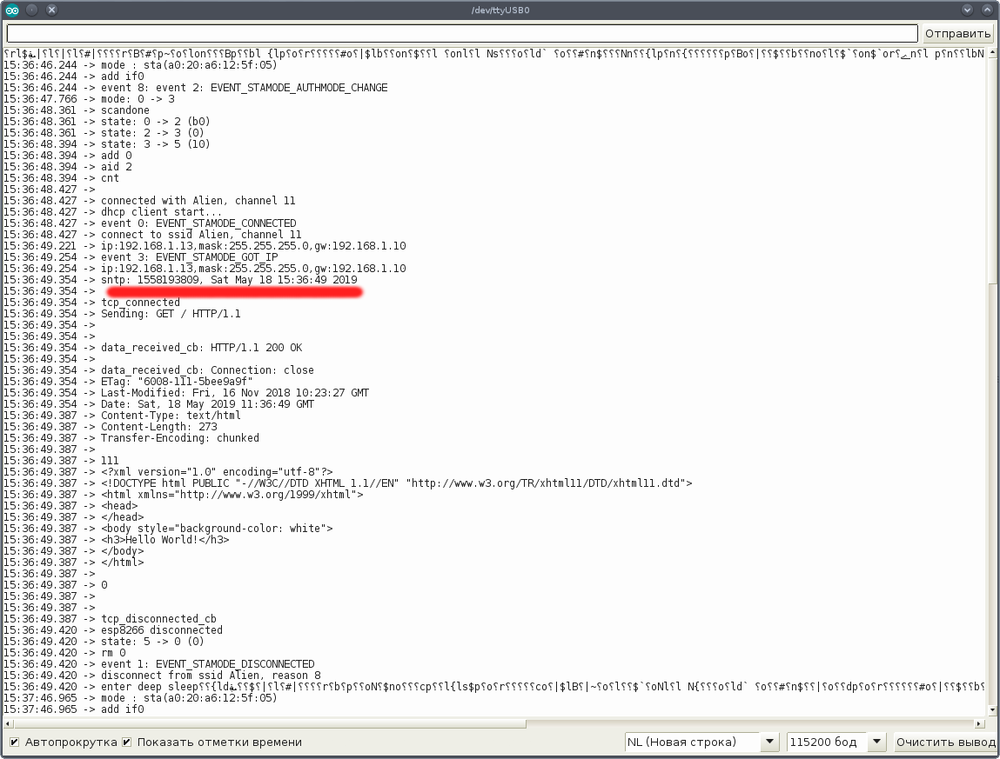
Если посмотреть на лог трафика, то можно увидеть DNS запросы на резовлинг домена 0.ru.pool.ntp.org с последующим обращением к ним по NTP протоколу: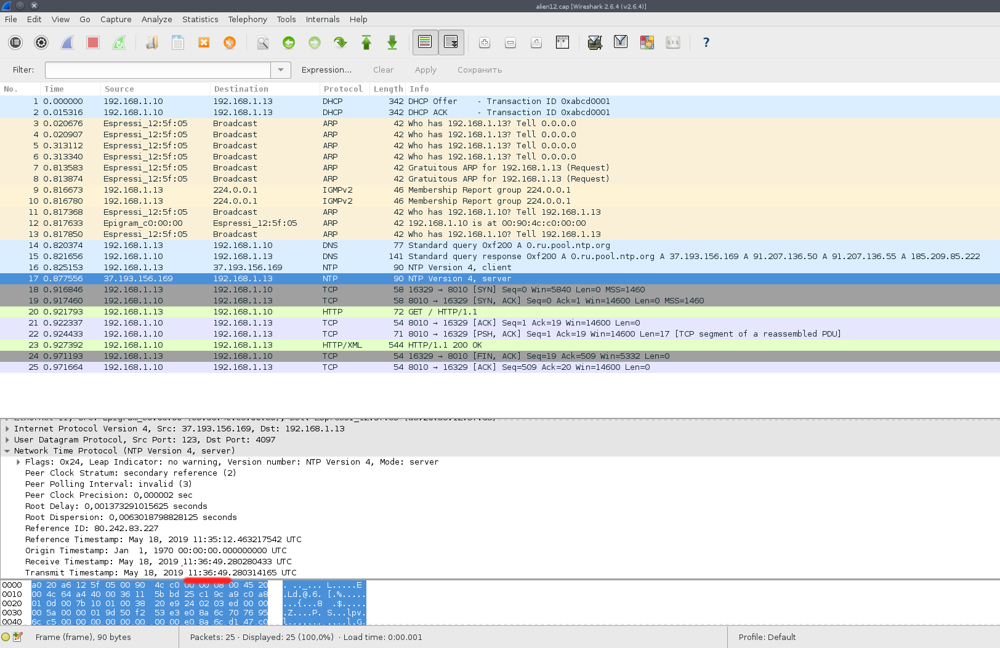
В теле ответа NTP сервера можно увидеть дату и время которую мы в итоге получили.
На этом пока все. Я не стал рассматривать в статье UDP запросы, работу в режиме сервера, LwIP, web-сокеты, внутренний RTC и другие интересные вещи в надежде найти для этого полезные практические примеры, а не ограничиваться голой теорией. Надеюсь, что следующая статья будет более интересной с практической точки зрения.
Еще раз повторю, что посмотреть все исходники, сборочные файлы, скачать скомпилированные прошивки, можно с портала GITLAB https://gitlab.com/flank1er/esp8266_sdk_examples